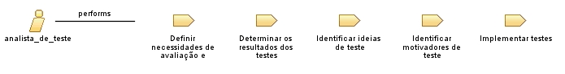

Role: analista_de_teste
Relationships

Primary Performs
Definir necessidades de avaliação e rastreabilidade
Determinar os resultados dos testes
Identificar ideias de teste
Identificar motivadores de teste
Implementar testes
Modifies
Diretrizes de teste (Catálogo de ideias de teste)
Plano de testes